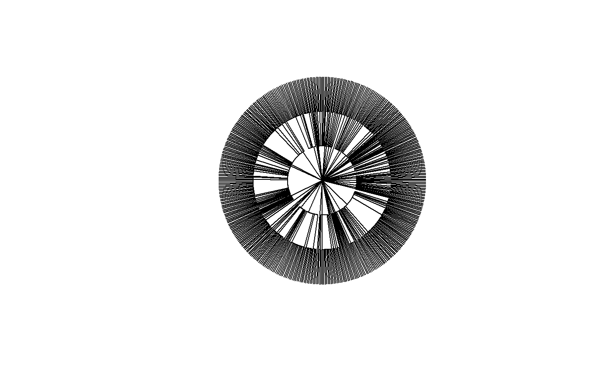

PhyloApply.RdCuts the tree into slices separated by nodes, applies the function to each slice and returns the weighted (by slice lengths) sum of the results.
PhyloApply(Tree, FUN, NorP, Normalize = TRUE, dfArgs = NULL, ..., CheckArguments = TRUE)
| Tree | An object of class |
|---|---|
| FUN | The function to be applied to each interval of the tree. |
| NorP | A numeric vector or a two-column matrix. Contains either abundances or probabilities. Two-column matrices should contain the observed abundances (or probabilities) in the first column and the expected ones in the second column, to allow using beta diversity functions. |
| Normalize | If |
| dfArgs | A dataframe. Columns are arguments for |
| ... | Further arguments to pass to |
| CheckArguments | Logical; if |
This funtion is generally not used directly. It is a tool to calculate PhyloEntropy and PhyloDiversity.
Intervals (slices) separate two cuts (nodes) in a tree: no node is found at heights contained in an interval.
Objects of class PPtree are returned by Preprocess.Tree.
... allow passing arguments to the function but they can't change along the tree. If necessary, dfArgs allow passing a different value for each slice of the tree.
An object of class PhyloValue. It is a list:
The distribution used to calculate the value
The function used to calculate the value
The functional or phylogenetic tree used to calculate the value
Logical. Indicates whether phylovalue is normalized or proportional to the height of the tree.
A named vector containing values along the tree. Names are cut ends, i.e. the ends of intervals (the first interval starts at 0 for leaves, the max value is the height of the tree).
A named vector containing the correction used by FUN to obtain each value of Cuts. Names are those of Cuts.
The total value, multiplied by the tree height if Normalize is FALSE.
Marcon, E., Herault, B. (2015). Decomposing Phylodiversity. Methods in Ecology and Evolution 6(3): 333-339.
# Load Paracou data (number of trees per species in two 1-ha plot of a tropical forest # and their taxonomy) data(Paracou618) # Plot the taxonomy plot(Paracou618.Taxonomy, type="fan", show.tip.label=FALSE)# Calculate the mean number of trees (individuals) per species # (Cuts are 1=species, 2=genus, 3=family) summary(PhyloApply(Paracou618.Taxonomy, mean, Paracou618.MC$Ns, TRUE))#> mean applied to Paracou618.MC$Ns along the tree: Paracou618.Taxonomy #> #> Results are normalized #> #> The average value is: 10.26421 #> #> Values along the tree are: #> 1 2 3 #> 2.644706 6.108696 22.039216